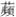

临 江 仙
晏幾道
梦后楼台高锁，酒醒帘幕低垂。去年春恨却来时。落花人独立，微雨燕双飞① 。 记得小 初见② ，两重心字罗衣③ 。琵琶弦上说相思。当时明月在，曾照彩云归④ 。
【注释】
①“落花”二句：原为五代翁宏《春残》诗中成句。 ②小

：歌女名，为作者友人的家妓。 ③“两重”句：谓熏两次香的罗衣。心字，指心字香。（用范成大《骖鸾录》中解说。另有人解作衣领式样或衣上图案。） ④彩云：喻指小 。李白《宫中行乐词》：“只愁歌舞散，化作彩云飞。”【语译】
当我梦觉酒醒之时，见到的只是楼台紧锁、帘幕低垂的景象。这当儿，去年春天离别之恨又重新回到我心上来了。落花寂寂，我独自久久站立；微雨濛濛，燕子正双双地飞逐。
我清楚地记得与小 初次相见的情景：她那反复熏过的绸衣衫上散发着香气。她弹着琵琶，在弦上诉说着相思之情。当时的明月如今就在眼前，这月儿曾经在歌舞散后照着彩云似的她回去。
【赏析】
晏幾道有两位常常相聚宴饮的朋友：沈廉叔和陈君宠，两家养有莲、鸿、 、云等一批出色的歌女家妓，她们常以弹唱娱客。小 就是其中之一，她妩媚善笑，小晏一见倾心，多年都难以忘怀。后来，君宠卧病成了废人，廉叔过世，两家的歌妓也都四处流散了（见张宗橚《词林纪事》）。小晏此词就为怀念小 而作。
词的上片只从自己孤寂生愁的举止情态，来暗示心有所思，在下片才明白说出思念对象的情事来。开头两句写居处寂寂无人，醉眠醒来，所见只是“楼台高销”、“帘幕低垂”，心中一片惘然。“梦后”“酒醒”，已暗示原来就有愁恨，故寻求于梦境醉乡之中，以期暂时得到一些宽慰。“去年春恨却来时”接得好，是用宕笔写出的摇曳之句。锁前带后，借“去年春恨”，点出离别的时间；“恨”字是全篇唯一直接说自己心情的地方。康有为极赏此词起头三句，以为“起三句，纯是华严境界”（梁令娴《艺蘅馆词选》引）。意思说它已到达全凭心灵去领会的极高的宗教境界。因佛家有《华严经》、华严宗，故谓。下面“落花”两句，誉者更多，为谓“名句千古，不能有二”（谭献《谭评词辨》）。可是它恰恰是五代诗人写的成句，小晏一字不差地将它照搬过来，成了自家的东西。这十个字在翁宏《春残》诗中，虽是佳句，但并不特别起眼，这之前也从未有人提起。不妨全引其诗：“又是春残也，如何出翠帏。落花人独立，微雨燕双飞。寓目魂将断，经年梦亦非。那堪向愁夕，萧飒暮蝉辉。”但到了晏小山手中，便大不一样。本有“春恨”之人，在微雨中怜落花、羡双燕，出神地独立良久，这意境与词意自然密合，恰同己出。词藉此而生辉，句经点化而成金。曾记夏瞿禅（承焘）师说此词时教诲道：“有晏幾道本领，掠劫他人之诗，可也。”
下片说清情事。“记得”二字郑重。“小 ”之名明点。虽是“初见”，今犹历历，可见当时印象之深。“两重心字罗衣”是“记得”的证据，连穿的衣服，衣上散发出熏香气味都没有忘。“两重心字”自然也暗示彼此心心相印。然后写她弹琵琶，这是那次宴席间她做的事，身份也清楚了。“弦上说相思”固然可理解为所奏的是关于相思的爱情曲，但同时也有借琵琶抒发内心相思或向作者传递思慕之情的意思在。正如唐诗所谓“诚知言语难传恨，不似琵琶道得真”。结尾写宴散人归。说的是“当时”，实在是写今日景象，微雨过后，明月当空。眼前的月亮就是“当时”的月亮，故用“在”，又用“曾”，它曾经照着小 一路回去。如今月色依旧，而人又在哪里呢？无限怅惘，以蕴藉语出之。用李白诗意，以“彩云”指代小 ，固然为避免用字重复，也借比喻小 的轻盈娇美，同时表现自己对欢会难逢、好景不常、佳人似彩云之易散的感慨。陈廷焯尤赏此词上下片结语，以为“既闲婉，又沉着，当时更无敌手”（《白雨斋词话》），是很有见地的。